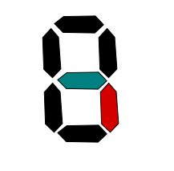
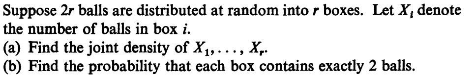
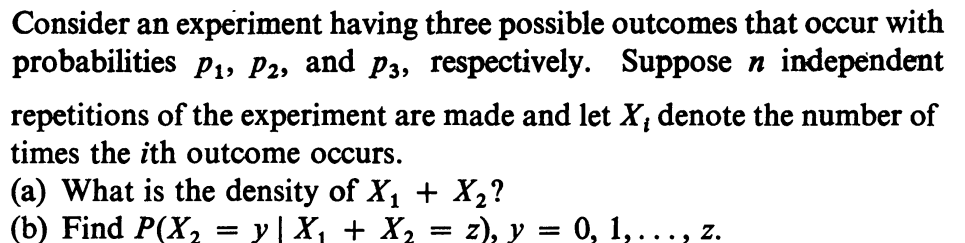
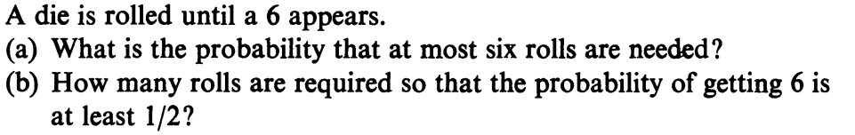
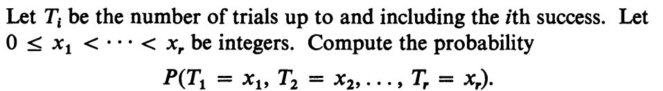
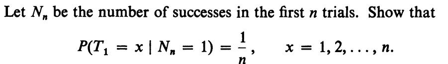
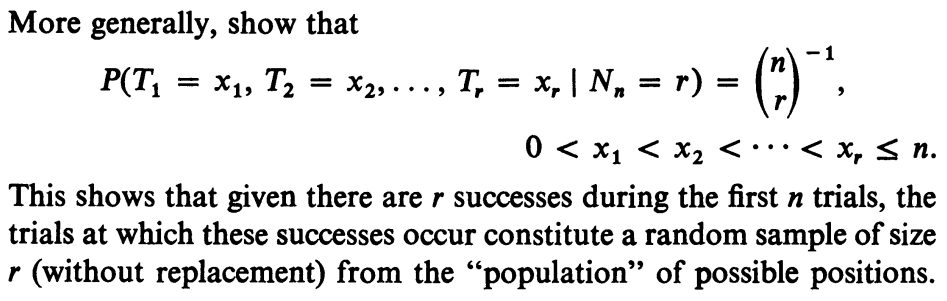
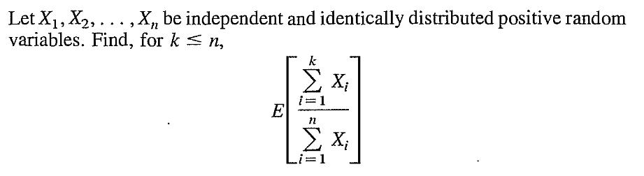
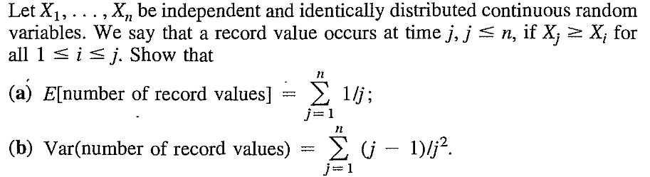
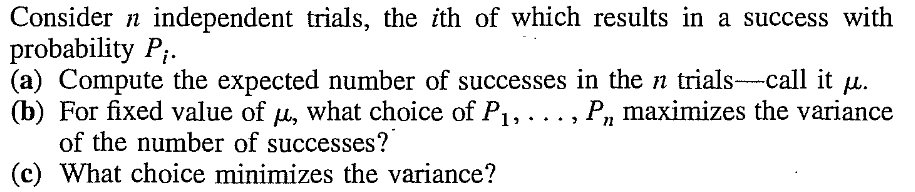

EXAMPLE 1:
A 7-segment display shows any number from 0 to 9 at random (equal
probabilities).

Let $X$ be the indicator random variable of
whether the blue segment is on. Similarly, $Y$ is the
indicator for the red segment. Find the conditional distribution
of $Y$ given $X.$
SOLUTION:
Here $X,Y$ both take values in $\{0,1\}.$
We need to find $P(Y=y | X=x)$ for $x,y\in\{0,1\}.$
Now $P(Y=1|X=1) = P(X=1,Y=1)/P(X=1).$
Both the blue and the red segments are on in only the numbers
3,4,5,6,8,9. So $P(X=1,Y=1) = \frac{6}{10}.$
The blue segment is on in the numbers 2,3,4,5,6,8,9. So $P(X=1) =\frac{7}{10}.$
Hence $P(Y=1|X=1) = P(X=1,Y=1)/P(X=1) = \frac 67.$
You should now be able to work out the other three conditional
probabilities similarly.
■
We can define conditional CDF or conditional PMF in the obvious
way.
It is important to understand that the conditional
expectation/variance is a random variable, which is a function of
the conditioning random variable.
Remember the throm of total probability:
$$
P(A) = P(B) P(A|B) + P(B^c)P(A|B^c),
$$
where combined the two conditional probabilities of $A$ to
arrive at the (unconditional) probability of $A?$
Well, we can do similar things with conditional
expectation/variance also.
Proof:
Let $X$ take values $x_1,x_2,...$ and $Y$ take
values $y_1,y_2,...$. Let the joint PMF of $(X,Y)$ be
$$
P(X=x_i~\&~Y=y_j) = p_{ij}.
$$
Then $P(Y=y_j | X=x_i) = \frac{p_{ij}}{p_{i\bullet}}.$
So $E(Y|X=x_i) = \sum_j y_j \frac{p_{ij}}{p_{i\bullet}}.$
Expectation of this is
$$
\sum_i E(Y|X=x_i) p_{i\bullet} = \sum_i \sum_j y_j
\frac{p_{ij}}{p_{i\bullet}}p_{i\bullet} = \sum_i \sum_j y_j p_{ij} =
\sum_j y_j \sum_i p_{ij} = \sum_j y_j p_{\bullet j} = E(Y),
$$
as required.
[QED]
Many expectation problems can be handled step-bystep using this
result. Here are some examples.
EXAMPLE 2:
A casino has two gambling games:
Roll a fair die, and win Rs. $D$ if $D$ is the
outcome.
Roll two fair dice, and win Rs 5 if both show the same
number, but lose Rs 5 otherwise.
You throw a coin with $P(Head)=\frac 13$ and decide to play game
1 if $Head,$ and game 2 if $Tail.$ What is your
expected gain?
SOLUTION:
Let $X$ be your gain (in Rs), and let $Y$ be the outcome of the
toss.
Then $E(X|Y=Head) = 3.5$ and $E(X|Y=Tail) = 5\times\frac{6-30}{36}=-\frac{10}{3}.$
So, by the tower property, $E(X) = P(X|Y=Head)\times P(Y=Head)+P(X|Y=Tail)\times P(Y=Tail) = \cdots.$
■
The tower property is very useful for computing expectations
involving a random number of random variables. Here is an
example.
EXAMPLE 3:
A random number $N$ of customers enter a shop in a
day, where $N$ takes values in $\{1,...,100\}$ with
equal probabilities. The $i$-th customer pays a random amount $X_i$,
where $X_i$ takes values in $\{1,2,...,10+i\}$
ith equal probabilities. Assuming that $N,X_1,...,X_N$ are
all independent, find the total expected payments by the
customers on that day.
SOLUTION:
We have $E(X_i) = \frac{11+i}{2}.$
So $E\left(\sum_1^N X_i|N\right) = \sum_1^N E(X_i|N) = \sum_1^N E(X_i) = \sum_1^N \frac{11+i}{2} = 5.5N+\frac{N(N+1)}{4}.$
By tower property, the required answer is $E\left(5.5N+\frac{N(N+1)}{4}\right)=\cdots.$
■
EXAMPLE 4:
10 holes, numbered 1 to 10, in a row. 5 balls are dropped
randomly in them (a hole may contain any number of balls). Call a
ball "lonely" if there is no other ball in its hole or the
adjacent holes. Find the expected number of lonely balls.
SOLUTION:
Define the indicators $I_1,...,I_5$ as
$$
I_i = \left\{\begin{array}{ll}1&\text{if }i\mbox{-th ball is lonely}\\0&\text{otherwise.}\end{array}\right.
$$
Then the total number of lonely balls is $X = \sum I_i.$
So we are to find $E(X) = \sum E(I_i).$
Let $Y_i = $ the hole where the $i$-th ball has fallen.
Then $E(I_i|Y_i=1)$ is the conditional probability that
all the balls except the $i$-th one has landed in
holes $2,...,10$ given that the $i$-th ball has landed
in hole 1.
You should be able to compute this easily. Similarly, you can
compute $E(I_i|Y_i=k)$ for $k=1,...,10.$
Notice that $Y_i$ can take values $1,...,10$ with equal probabilities.
So tower property should provide the answer as
$$
E(X) = \sum E(E(I_i|Y_i)) = \cdots.
$$
■
Proof:
This follows directly from the tower property.
If $X,Y,Z$ are jointly distributed random variables, then we
can talk about conditional distribution of $Z$
given $(X,Y)$ or $X$ given $Z$ or $(X,Z)$
given $Y,$ etc. We can even condition step by step. For
example, we can talk about $E(E(Z|X,Y)|X).$ This is a
function of $X$ alone.
(a) Once you realise that $f_X(x) = P(X=x)$, $f_Y(y) = P(Y=y)$ and
$f_{Y|X}(y|x) = P(Y=y|X=x),$ the given equality is just theorem of total probability.
(b) The RHS is $E(E(Y|X))$ and so the equality is just the tower property.
(a) Let $U = \min(X,Y).$ Then $U$ can take values $0,...,N.$
$P(U=k) = P(U\geq k-1)-P(U\geq k).$
Now $P(U\geq k) = P(X,Y\geq k) = P(X\geq k)P(Y\geq k) = \left(\frac{N-k+1}{N}\right)^2.$
Similarly, $P(U\geq k-1) = \left(\frac{N-k+2}{N}\right)^2.$
So $P(U=k) = \left(\frac{(N-k+2)^2-(N-k+1)^2}{N^2} = \frac{2N-2k+3}{N^2}.$
(b) Let $T = \max(X,Y).$ Then $T$ can take values $0,...,N.$
$P(T=k) = P(U\leq k)-P(T\leq k-1).$
Now $P(T\leq k) = P(X,Y\leq k) = P(X\leq k)P(Y\leq k) = \left(\frac{k+1}{N}\right)^2.$
Similarly, $P(T\leq k-1) = \left(\frac{k}{N}\right)^2.$
So $P(T=k) = \left(\frac{(k+1)^2-k^2}{N^2} = \frac{2k+1}{N^2}.$
(c) $R=|Y-X|$ can take values in 0,1,...,$N.$
$P(R=0) = P(X=Y) = \frac{1}{N+1}.$
For $k=1,...,N,$ we have $P(R=k) = P(R=k \& X < Y) + P(R=k \& X=Y) + P(R=k \& X > Y).$
Now $P(R=k \& X=Y) =0.$
Also $P(R=k \& X < Y) =P(R=k \& X > Y).$
For $\{R=k\ & X < Y\}$ to happen we must have $X = 0,...,N-k$ and correspondingly $Y = k,...,N.$
So $P(R=k\ & X < Y) = \frac{N-k+1}{N}.$
Hence $P(R=k) = \frac{2(N-k+1)}{N}.$
(a) $P(X=x) = \sum_y P(X=x,Y=y) = \sum_y g(x)h(y) = g(x)\sum_y h(y).$
(b) $P(Y=y) = \sum_x P(X=x,Y=y) = \sum_x g(x)h(y) = h(y)\sum_x g(x).$
(c) We know that $\sum_x\sum_y P(X=x,Y=y) = 1.$ Hence $\sum_x\sum_y g(x)h(y) = 1,$ i.e., $\sum_xg(x)\sum_y h(y) = 1.$
(d) To show $\forall x, y~~P(X=x,Y=y) = P(X=x)P(Y=y).$
Take any $x,y.$
Then $P(X=x)P(Y=y) = \big[\sum_y h(y) \big]g(x)\big[\sum_x g(x) \big]h(y) = g(x)h(y) = P(X=x,Y=y).$
::
EXERCISE 7: 
Here "density" means "PMF".
::
EXERCISE 8: 
::
EXERCISE 9: 
::
EXERCISE 10: 
::
EXERCISE 11: 
::
EXERCISE 12: 
::
EXERCISE 13: 
::
EXERCISE 14: 
Let $I_j$ be the indicator variable for whether there is a
record at position $j.$ Then $P(I_j=1)$ may be computed
by total probability:
$$
P(I_j=1) = \sum_{k=j}^n P(X_j=k)P(I_j=1|X_j=k).
$$
Similarly for $P(I_jI_k=1).$
::
EXERCISE 15: 
The problem is basically optimising $\sum P_i^2$ subject
to $\sum P_i$ being fixed. Cauchy-Scwartz might help.
No, the result may not hold if the $X_i$'s have a dependence structure that is
asymetric. A counterexample is as follows.
$X_1 = $ outcome of a roll of a fair die. $X_2$ is obtained from $X_1$ by
swapping 1 and 2. $X_3$ is obtained from $X_1$ by swapping 1 and 3. Then $E(X_1|X_1+X_2+X_3=6)=1\neq \frac 63.$